Studentský projekt SSPŠ a G
Sestupte do skutečného krytu civilní ochrany
Výstava Kryt Radlice přibližuje veřejnosti fungování aktivního krytu po technické stránce — filtroventilaci, tlakové uzávěry, záložní zdroje i sbírku předmětů ochrany obyvatelstva.
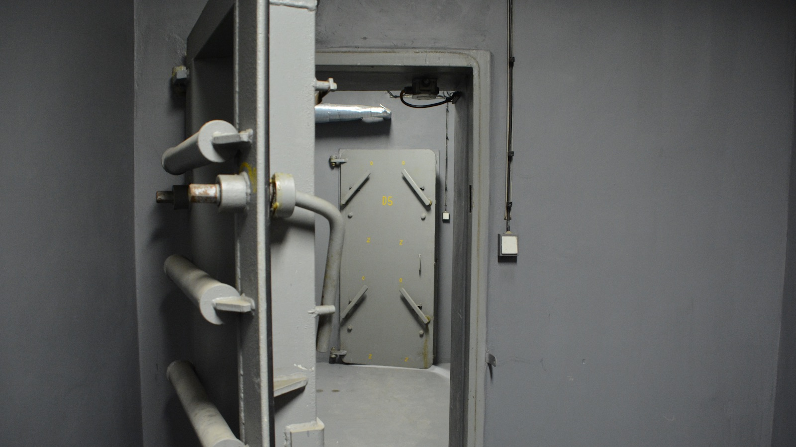
- 0 Kčvstup zdarma
- 1 hodinadélka prohlídky
- 5 metrůpod povrchem
- 17 °Cstálá teplota
Aktuálně
Slavnostní otevření
18. 6. 2026 od 10:00
Společné otevření Krytu Radlice a výstavy modelu Osvětimi od dalších studentů naší školy. Registrace není nutná — stačí přijít. Těšíme se na vás!
Radlická 591/115, 158 00 Praha 5 – Jinonice
Z vrátnice trefíte podle připravených šipek.
O projektu
Výstava Kryt Radlice je studentský projekt, který veřejnosti přibližuje fungování aktivního krytu civilní ochrany — zejména po technické stránce.
Součástí prohlídky je i výstava předmětů spojených s ochranou obyvatelstva: dozimetry, ochranné obleky, polní telefony a další vybavení, které kdysi patřilo ke každodenní přípravě na krizové situace.
Unikátním prvkem krytu bude vlastní digitální řídicí a monitorovací systém, který aktuálně navrhujeme. V blízké době začneme s instalací vlastních kabelů, čidel, rozvaděčů a dalších prvků.
-
Technika v provozu
Filtroventilace, tlakové uzávěry i záložní generátor s alternátorem — vše zblízka a s výkladem.
-
Výstava exponátů
Dozimetry, ochranné obleky, polní telefony a další předměty ochrany obyvatelstva.
-
Vlastní monitoring
Digitální řídicí systém krytu — čidla, rozvaděče a kabeláž instalují sami studenti.
Fotogalerie
Kliknutím na fotografii ji zvětšíte.
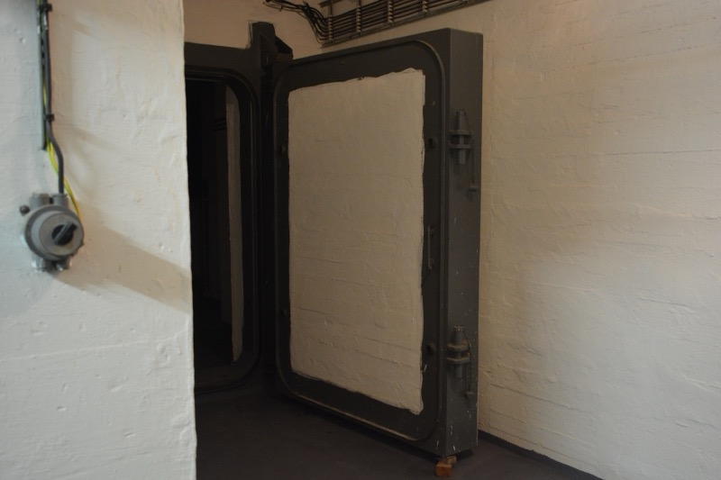
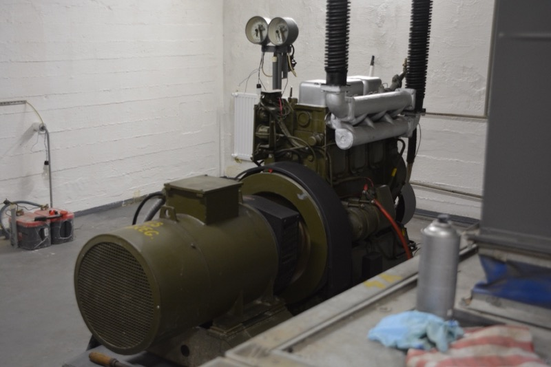
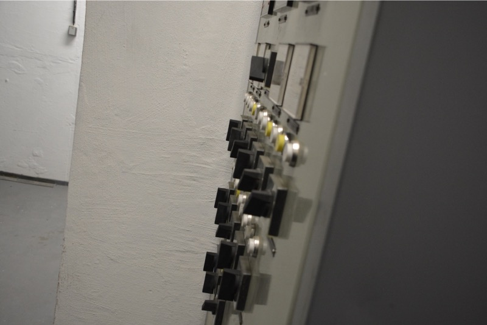
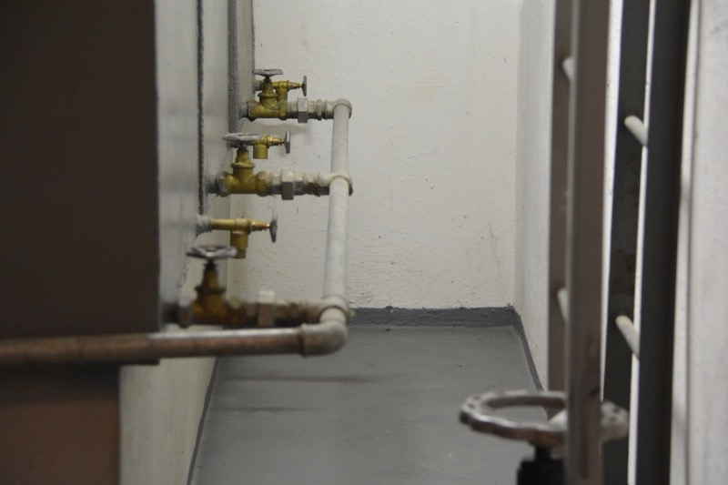
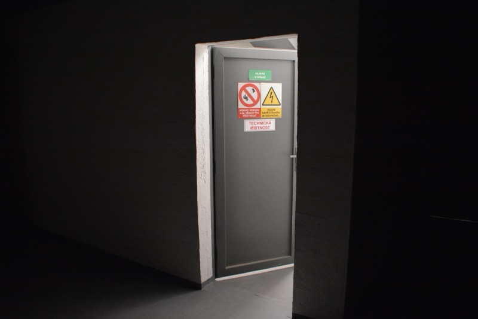
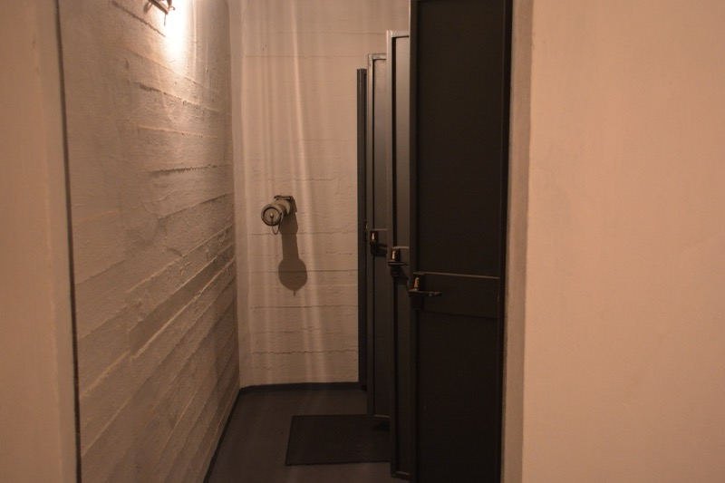
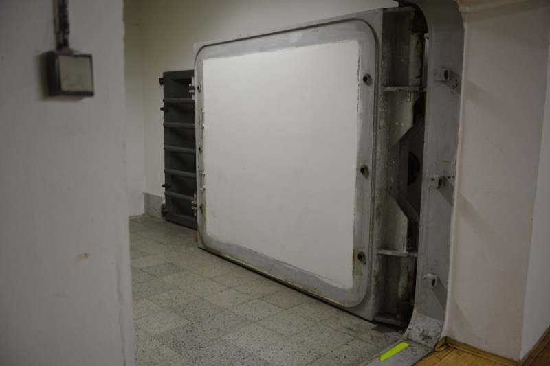
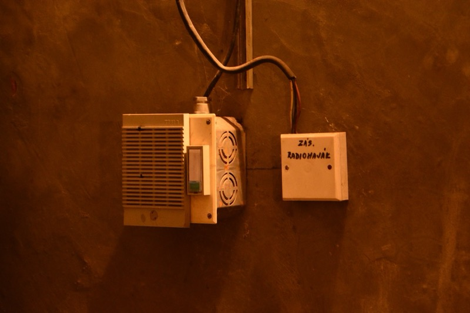
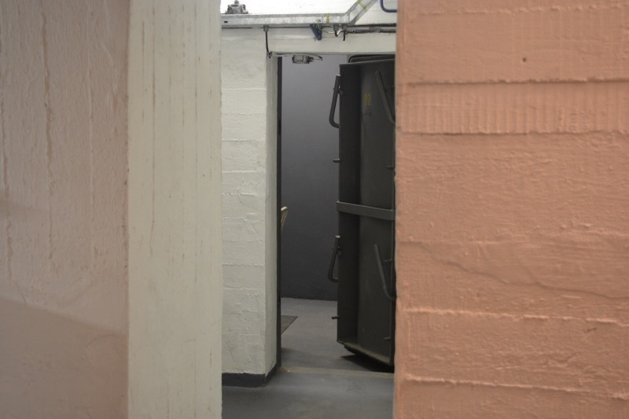
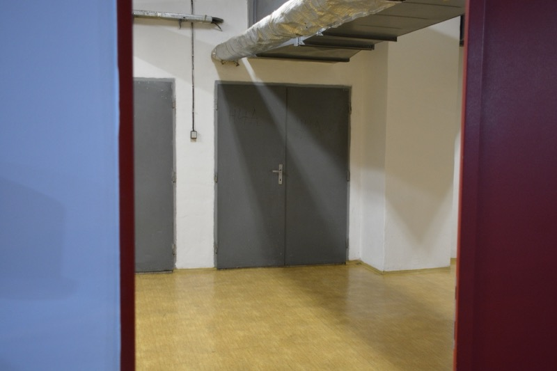
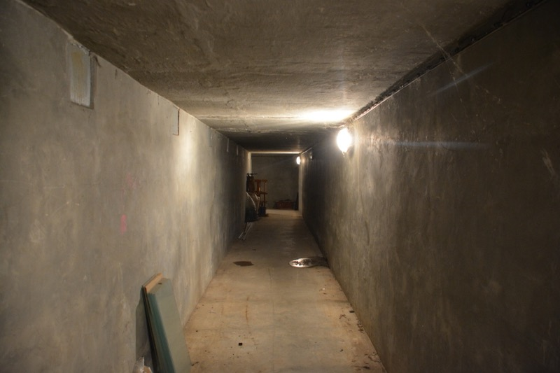
Prohlídky
Prohlídky probíhají v předem stanovených termínech — zpravidla v pátek, o víkendu nebo o státním svátku.
Na konkrétní termín je nutné se přihlásit formulářem v sekci rezervace. Vstup je zdarma, na místě je možné přispět na údržbu krytu. Během prohlídky si projdete téměř veškeré prostory — místnosti pro ukrývané, technické zázemí i výstavu — a průvodce vám vysvětlí fungování jednotlivých zařízení.
- Sraz
- Na vrátnici školy, Radlická 591/115, 158 00 Praha 5 – Jinonice
- Délka
- Přibližně 1 hodina, komentovaná prohlídka s průvodcem
- Teplota
- V krytu je stálých 17 °C — zvažte vrstvu oblečení navíc
- Zázemí
- WC je k dispozici před prohlídkou i po ní
- Přístupnost
- Do podzemí se schází po schodech (asi 5 m) — bohužel nevhodné pro vozíčkáře a kočárky
- Pravidla
- V celém areálu a během prohlídky platí návštěvnický řád (PDF)
Rezervace
Rezervační systém se připravuje
Spustíme ho po slavnostním otevření výstavy.
Do té doby nás můžete navštívit na slavnostním otevření 18. 6. 2026 od 10:00 — bez registrace. Máte-li jakékoli dotazy či potíže, napište nám.
Napsat na ruzicka.ma.2025@ssps.czKontakty
Tým projektu
Vedoucí týmu
Matěj Růžička
Členové týmu
Alexandr Svoboda, Daniel Tůma, Václav Šprincl, Adam Hněvkovský, Petr Jakl
E-mail
ruzicka.ma.2025@ssps.cz
Škola
Projekt studentů Smíchovské střední průmyslové školy, gymnázia a Hotelové školy Radlická, příspěvková organizace.
Kde nás najdete
Areál s krytem (Jinonice)
Radlická 591/115
158 00 Praha 5 – Jinonice
Areál školy (Smíchov)
Preslova 72/25
150 00 Praha 5 – Smíchov